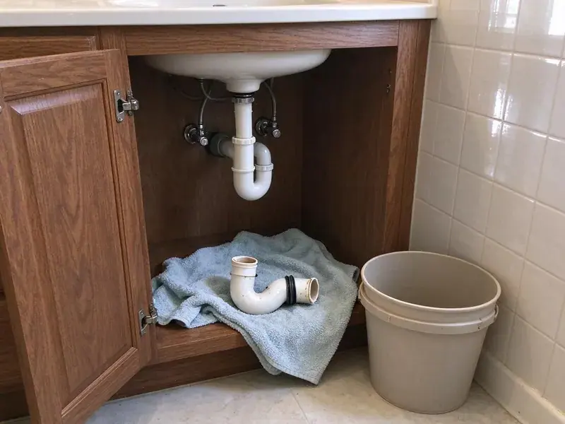

Emergency Plumbing Repair in Waterloo, IA
When plumbing fails at the worst time, we answer the phone, help you limit damage and send a plumber fast in Waterloo, IA.
- Licensed & Insured
- Skilled Plumbers
- Rapid 24/7 Response
- Upfront Pricing Before Work

Plumbing Emergency Right Now? Get a Plumber on the Way in Waterloo, IA.
We answer emergency calls at night, on weekends and on holidays, and we give you a price before we start.
Your Local Partner for Emergency Plumbing Repair in Waterloo, IA
When a critical plumbing issue arises in your Waterloo home, KFR Plumbing is your first call. We specialize in fast emergency plumbing repair, addressing everything from sudden leaks to complete system failures. Our rapid response keeps water damage contained and brings your plumbing system back online safely and efficiently.
Our expertise includes:
- Burst Pipe Repair & Prevention
- Safe resolution of gas leaks and water heater failures.
- Main line backup clearing with augers, jetters and cameras

Additional Plumbing Repair Services in Waterloo, IA
We offer expert plumbing repair services across Waterloo, IA to stop leaks, clear blockages, and keep every fixture working the way it should.


Customers
Why Choose KFR Plumbing for Emergency Plumbing Repair in Waterloo, IA?
When your plumbing fails unexpectedly, you need a team you can trust to respond right away and effectively. KFR Plumbing is committed to providing fast, reliable emergency plumbing repair.
- Lasting Solutions, We don't just patch problems. We aim to provide durable repairs using quality parts and proven techniques, preventing future emergencies.
- Experienced Technicians, Our plumbers are highly trained and experienced in diagnosing and repairing a wide range of emergency plumbing issues, following Iowa plumbing codes.
- No Surprise Bills, You approve a written price before any emergency repair begins.
Citywide Coverage
From the busy downtown to the quiet suburbs, our rapid response teams are positioned to provide emergency plumbing repair throughout Waterloo, IA. We're always ready to dispatch a plumber to your location.
Experienced Team
Our team of licensed plumbers brings years of hands-on experience to every emergency plumbing repair job. They are continuously trained on the latest diagnostic tools and repair methods for efficient and accurate service in your Waterloo home.
Safety-First Approach
For every emergency plumbing repair, KFR Plumbing follows strict safety protocols and industry best practices. This includes proper handling of tools, securing work areas, and making sure all repairs, such as replacing a corroded pipe, meet the highest standards of safety and compliance with Iowa regulations.
Trusted Certified Waterloo Plumbing Services Professionals
At KFR Plumbing, we take pride in providing licensed, certified plumbing services throughout Waterloo, IA. Backed by recognized industry credentials, our experienced plumbers combine technical skill with genuine customer care. Whether it is repair, installation, or maintenance, we follow strict safety and quality standards to deliver long-lasting results you can trust.
Call Us Now PHCC Plumbing Contractor Recognition
PHCC Plumbing Contractor Recognition Better Business Bureau (BBB) Accreditation
Better Business Bureau (BBB) Accreditation Angi Certified Pro
Angi Certified Pro ISO 9001 Quality Management Certification
ISO 9001 Quality Management CertificationDependable Emergency Plumbing Repair Services in Waterloo, IA
Severe Clog Removal in Waterloo, IA
A severe drain or sewer line clog can cause sudden backups, posing health risks and significant inconvenience. Our emergency plumbing repair team uses advanced tools like hydro-jetting and augers to clear stubborn blockages caused by grease buildup, foreign objects, or tree root intrusion. We fix the root cause of the clog to prevent recurrence so your drainage system in Waterloo, IA flows freely.

Burst Pipe Emergency Repair in Waterloo
A burst pipe can release several gallons per minute into walls, ceilings or floors. Common causes include high pressure, corrosion, physical damage and freezing weather. We help you shut off the main valve, then find and repair the damaged section. We also check pressure and nearby pipes to prevent another burst.
Toilet Overflow & Repair in Waterloo, IA
An overflowing toilet is a messy and urgent plumbing emergency that can lead to serious water damage if not handled immediately. Our team quickly diagnoses the cause, whether it's a clogged drain, a faulty fill valve, or a malfunctioning flapper. We perform necessary repairs or replacements so your toilet works correctly and does not overflow again, restoring hygiene and function to your Waterloo, IA home.
Emergency Sump Pump Failure in Waterloo, IA
Homes with basements or crawl spaces in Waterloo, IA can rely on sump pumps to prevent flooding during heavy rains. Heavy spring rain and river flooding are common in Iowa, and saturated ground can quickly push water into basements. A failed sump pump during a downpour is a serious emergency. We rapidly diagnose electrical issues, clogged impellers, or mechanical failures, providing immediate repairs or replacements to protect your property from water damage and restore proper drainage.
Major Leak Detection & Repair in Waterloo
Beyond obvious burst pipes, significant hidden leaks can cause extensive structural damage and high water bills. Our emergency plumbers in Waterloo use advanced leak detection technology, such as acoustic sensors and thermal imaging, to pinpoint the source of major leaks, including those behind walls or under slabs. Once located, we perform precise repairs to prevent further damage and restore your plumbing.
Gas Leak Emergency Response in Waterloo
If you smell gas, leave the home right away and call your gas utility or 911 from outside. Once the area is safe, our licensed plumbers can locate and repair gas line leaks at water heaters, ranges, dryers and outdoor appliances. We pressure test the system before restoring service. Never ignore the smell of gas.
Sewer Line Backup Emergency in Waterloo
A raw sewage backup is a health hazard and a plumbing nightmare. This often points to a severe blockage or damage in your main sewer line. Our emergency team in Waterloo will quickly assess the situation, often using video inspection, to pinpoint the cause and location of the backup. We then use the right methods, from snaking to trenchless repair, to clear the obstruction and restore your sewer system.

Gas Leak Detection & Repair in Waterloo, IA
Gas leaks are critical emergencies that require immediate professional attention due to safety hazards. KFR Plumbing provides fast response for suspected gas leaks, using specialized detectors to pinpoint the source. We perform precise repairs on gas lines, fittings, or appliance connections, and all work complies with Iowa safety codes. Your safety in Waterloo, IA is our top priority, and we work fast to resolve these dangerous situations.
Emergency Plumbing Repair Near Me in Waterloo, IA
Don't waste time searching for 'emergency plumber near me' when every minute counts. KFR Plumbing offers reliable, fast-response emergency plumbing repair across the Waterloo area. Our local knowledge lets us arrive quickly and address your plumbing emergency, limiting inconvenience and potential damage.
Our commitment to Waterloo means we prioritize rapid response for all emergency plumbing repair calls. You won't wait long for a skilled professional to arrive, equipped to diagnose and resolve your plumbing crisis, providing peace of mind when you need it most.
KFR Plumbing at a Glance
- Licensed and insured plumbers serving Waterloo, IA
- Same-day appointments and 24/7 emergency response
- Upfront, flat-rate pricing before work begins
- 4.8-star rated by 620+ Iowa customers
Waterloo Map
Waterloo Information
- Population
- 66,606
- Area codes
- 319/515/641
- Service area
- Waterloo and communities within 40 miles
- Nearby
- Cedar Falls, Marion, Cedar Rapids, Iowa City
Weather extremes strain water heaters and supply lines in Waterloo, IA, and hard freezes or heavy downpours can cause burst pipes and sewer backups with little warning. Heavy spring rain and river flooding are common in Iowa, and saturated ground can quickly push water into basements.
Expert Services
Trust our professionals for reliable KFR Plumbing solutions in Waterloo, IA.
Our Specialized Plumbing Services in Waterloo, IA
At KFR Plumbing, we provide a complete range of plumbing services across Waterloo, IA. From leak detection to full system installations, our team ensures fast, precise, and affordable service for both residential and commercial properties. Explore our core services below:


How Our Emergency Plumbing Repair Process Works in Waterloo, IA
When you call KFR Plumbing for an emergency plumbing repair in Waterloo, we begin a streamlined process to get help to you as quickly as possible.
Request a Quote
Call (515) 308-3583 and tell us what is happening, and we will help you shut off water or gas right away. We dispatch a plumber right away.
Stabilize the Situation
On arrival, we stop the leak or backup and assess the damage. We give you a written price for the repair before starting.
Repair and Restore
We make the repair, test the system and restore service. We clean up and explain how to prevent a repeat emergency.
Frequently Asked Questions About Emergency Plumbing Repair in Waterloo
Emergency plumbing repair costs in Waterloo, IA can vary widely based on the complexity and type of repair. Simple fixes like a minor leak might range from $150 to $400, while more complex issues like a burst main pipe or sewer line repair could be $500 to $2,000 or more. We always provide upfront pricing before any work begins.
Yes, our technicians are trained and experienced in repairing plumbing systems and fixtures from all major brands. This includes water heaters from Rheem, Bradford White, A.O. Smith, and Navien, as well as fixtures from Moen, Delta, Kohler, and American Standard. We carry common parts for quick emergency repairs.
Many homeowner policies cover sudden water damage from burst pipes or appliance failures. We provide documentation and photos to help with your claim.
Shut off the main water valve or the valve to the affected fixture. For water heater leaks, close the cold water inlet and turn off the gas or power. If you smell gas, leave and call the gas utility.
If you suspect a gas leak, such as a rotten egg smell or a hissing sound, right away evacuate everyone from the building, do not use any electrical switches or phones inside, and call 911 or your gas company from a safe distance. Then, call KFR Plumbing at (515) 308-3583 for immediate gas line repair.
For most plumbing emergencies, especially those involving water pressure, gas lines, or potential flooding, it is highly recommended to call a professional. DIY attempts can often worsen the problem, cause more damage, or even create safety hazards, particularly with gas or electrical components. It's best to turn off the main water supply and call KFR Plumbing.
KFR Plumbing is equipped to service and repair all major plumbing brands found in Iowa homes and businesses. This includes water heaters from Rheem, Bradford White, A.O. Smith, and Navien, as well as fixtures from Moen, Delta, Kohler, and many others. Our technicians carry a wide range of everyday parts.
Response times depend on location and call volume, but we aim to reach emergency calls as quickly as possible. We give you an estimated arrival time when you call.
What People Are Saying About Our Plumbing Experts?

Mark T.
When our office needed drain cleaning, KFR Plumbing provided quick, reliable service. The plumber arrived on time and made sure every drain flowed perfectly before leaving. Very satisfied.
Drain Cleaning · Iowa City, IA
Laura S.
I scheduled a water heater replacement, and the team made the process smooth and affordable. The new unit works perfectly, and they cleaned up after completing the job.
Water Heater Replacement · Marion, IASofia M.
Two new toilets installed in one visit, no mess left behind, and the tech even adjusted a faucet he noticed was dripping. Fair pricing and really friendly.
Toilet Installation · Iowa City, IA
James P.
Our commercial plumbing system had a leak under the sink, and KFR Plumbing handled it professionally. The plumbers arrived quickly and restored everything without disruption to our customers.
Commercial Plumbing · Waterloo, IA
Emily R.
I called KFR Plumbing for plumbing repair, and the technician was fast, polite, and thorough. They explained the problem clearly and fixed it the same day. I will definitely hire them again. Highly recommended!
Plumbing Repair · Cedar Falls, IA
Daniel K.
A pipe burst at 11 pm and they actually answered. The plumber showed up within the hour, shut everything down, and had us back to normal the next morning. Could not ask for more.
Emergency Plumbing · Iowa City, IA